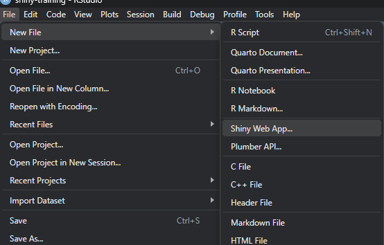
Interactive Graphics with Shiny
Slides
Shiny
These slides modified from https://github.com/dime-wb-trainings/shiny-training
What Is Shiny?
Shiny is a web application framework for R that allows you to turn analyses into interactive web apps — all in R.
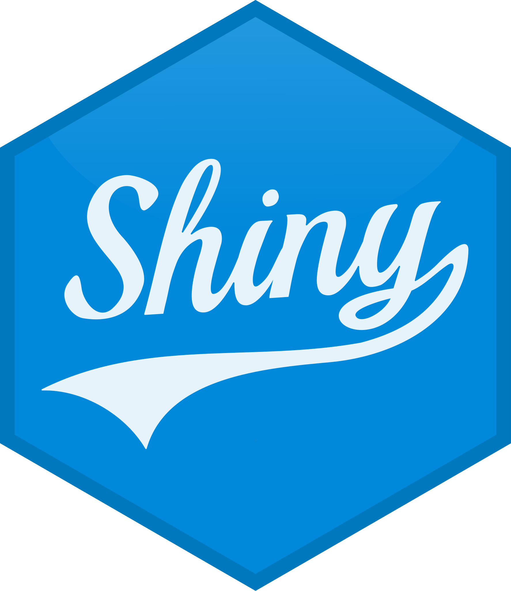
Why use it?
- Easy to learn and use
- Fast development cycle
- Powerful for data visualization
- Built on R (leverage your analysis directly)
- Great for sharing insights interactively
Anatomy of a Shiny App
A Shiny app has two core components:
- UI (User Interface): Defines how the app looks
- Server: Defines how the app works
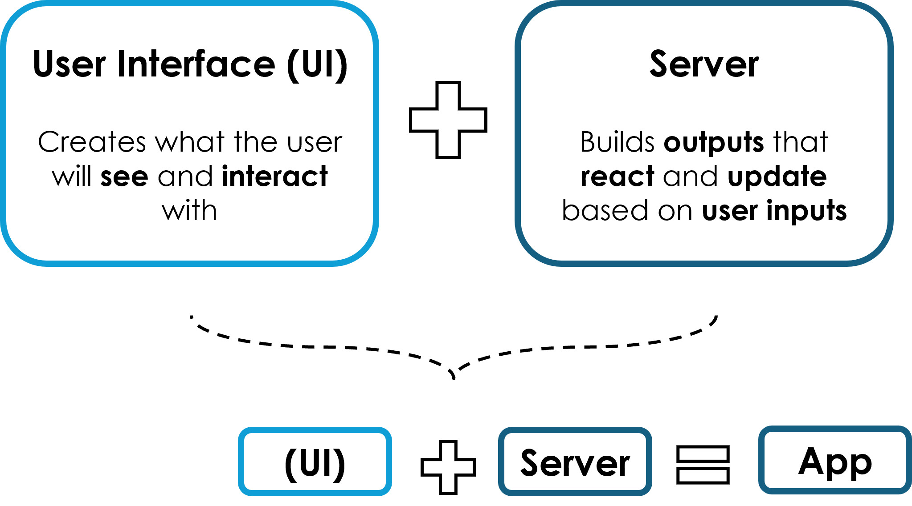
The Client, Host, and Server
Apps are served to users via a host and port. The R session running the server reacts to user actions, computes results, and sends them back.
Client: The web browser where the user interacts with the app
Host:Port: Shiny app is served at an IP (host) and port
Server: Runs R session to monitor inputs and respond with outputs
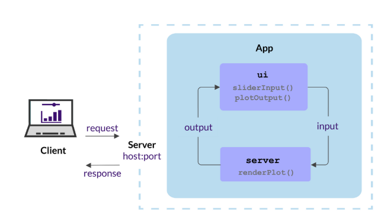
Let’s Build Our First App Together (with the help of the R template) ✍️
Step-by-step instructions:
- Open RStudio
- If you haven’t already installed Shiny, run:
install.packages("shiny")- Load the Shiny library:
library(shiny)- Create a new Shiny Web App: Click on File > New File > R Shiny Web App
Let’s Build Our First App Together (with the help of the R template) ✍️
5. Choose Single File option when prompted:
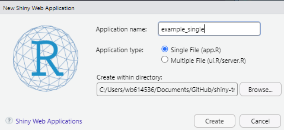
6. Name your folder and click OK
7. Click Run App in the top-right corner
8. 🎉 You’re running your first Shiny app!
Let’s Explore the Code 🧠
ui — User Interface
ui <- fluidPage( #<<
titlePanel("Old Faithful Geyser Data"),
sidebarLayout(
sidebarPanel(
sliderInput("bins",
"Number of bins:",
min = 1,
max = 50,
value = 30)
),
mainPanel(
plotOutput("distPlot")
)
)
)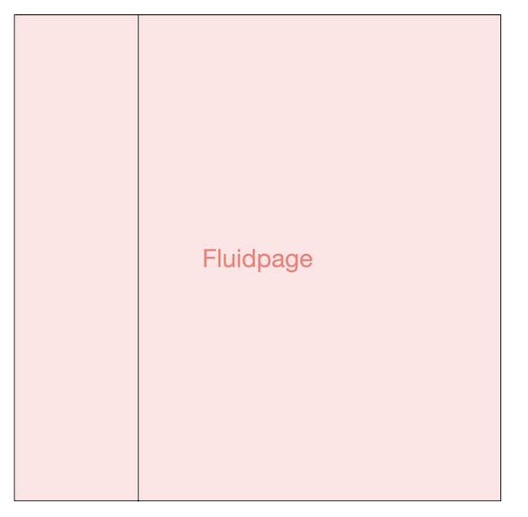
Layout elements
fluidPage()is the container for the app interface, the layout in which your content is. This is the most common, but there are other types of layouts. Check here
ui — User Interface
ui <- fluidPage(
titlePanel("Old Faithful Geyser Data"),
sidebarLayout( #<<
sidebarPanel(
sliderInput("bins",
"Number of bins:",
min = 1,
max = 50,
value = 30)
),
mainPanel(
plotOutput("distPlot")
)
)
)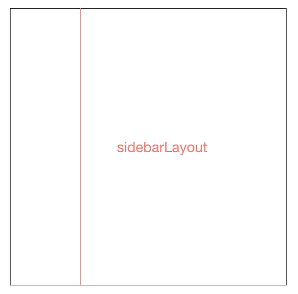
Layout elements
sidebarLayout()splits the layout into sidebar (sidebarPanel()) and main area (mainPanel()). This is also optional.
ui — User Interface
ui <- fluidPage(
titlePanel("Old Faithful Geyser Data"),
sidebarLayout(
sidebarPanel( #<<
sliderInput("bins", #<<
"Number of bins:", #<<
min = 1, #<<
max = 50, #<<
value = 30) #<<
),
mainPanel(
plotOutput("distPlot")
)
)
)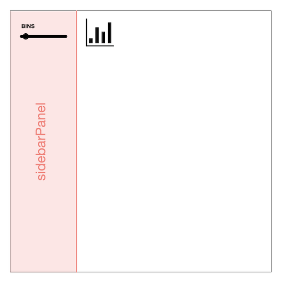
Page content
sidebarPanel()contains one input field (sliderInput()) called “bins”. This is a slider that lets a user choose a number. As you can infer from the name, in this case, it’s the number of histogram bins.
ui — User Interface
ui <- fluidPage(
titlePanel("Old Faithful Geyser Data"),
sidebarLayout(
sidebarPanel(
sliderInput("bins",
"Number of bins:",
min = 1,
max = 50,
value = 30)
),
mainPanel( #<<
plotOutput("distPlot") #<<
)
)
)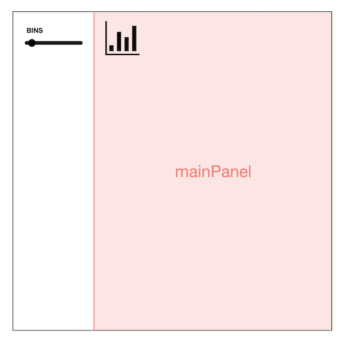
Page content
mainPanel()contains a histogram (plotOutput()), which will be defined in the server function. The name, or id, of this histogram is “distPlot”
Shiny server Logic Explained ⚙️
server <- function(input, output) {
...
}The server() function takes two arguments:
input: a reactive list of input values from the UIoutput: a reactive list where you assign render functions
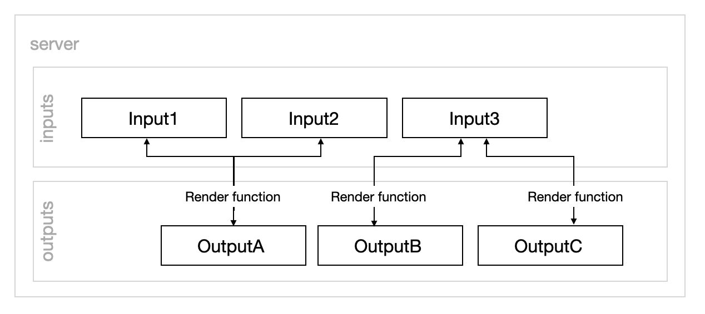
Reactive lists are “special” lists used in reactive programming — a way to make your app automatically update outputs when inputs change.
Shiny server Logic Explained ⚙️
server <- function(input, output) {
output$outputId <- renderFunction({
value <- input$inputId
})
}Let’s take a look at reactivity inside a simple server( ):
renderFunction: A function likerenderPlot(),renderTable(), etc. used to render an output (a plot, a table…)outputId: Identifies the rendered output in the output list (output$) for the UI- The function regenerates
valueevery time the input field referenced by inputID in the input list changes.
Shiny server Logic Explained ⚙️
server <- function(input, output) {
output$distPlot <- renderPlot({
x <- faithful[, 2]
bins <- seq(min(x), max(x), length.out = input$bins + 1)
hist(x, breaks = bins, col = 'darkgray', border = 'white',
xlab = 'Waiting time to next eruption (in mins)',
main = 'Histogram of waiting times')
})
}In our case:
the server contains the logic to create the histogram
distPlotin the output list (output$), using the render functionrenderPlot().distPlotdepends on one user input (input$bins), which pulls the number from the slider input in the UI.
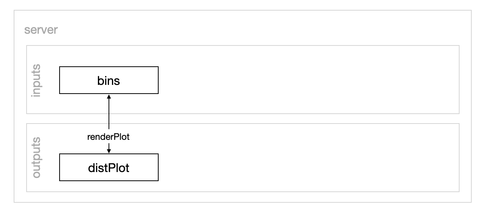
➡️️ Result: the histogram updates as the slider moves!
How the Server Connects to the UI 🧩
Remember these connections?
| UI | Server |
|---|---|
plotOutput("distPlot") |
output$distPlot <- renderPlot() |
sliderInput("bins", ...) |
input$bins |
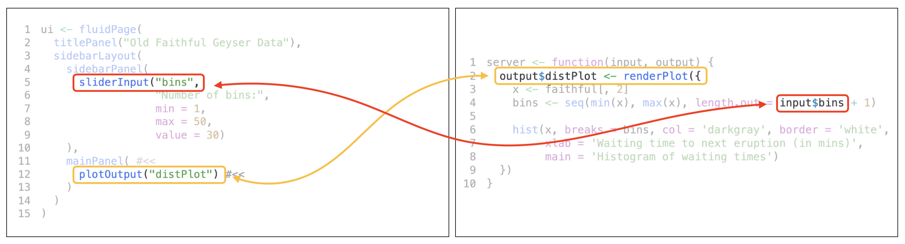
Inputs & Outputs in Shiny 🧠
Shiny apps are built by connecting inputs (from the UI) to outputs (rendered in the server).
| Part | Role | Examples |
|---|---|---|
ui |
Define layout and inputs/outputs | sliderInput(), plotOutput() |
server |
Logic to render outputs based on inputs | renderPlot(), renderText() |
🔁 Reactivity connects them:
input$...pulls values from UI controlsoutput$... <- render...()generates dynamic content
A recap on Reactivity 🔁
- Reactive programming lets your app respond to changes without needing to re-run code manually.
inputandoutputbehave like reactive lists — not regular R lists, but special objects in Shiny.- When a user selects a value on the slider, say 5, Shiny stores it as
input$bins = 5. - If the user changes it to 7, Shiny automatically updates the
inputlist — and any render function using it will re-execute. - This is why
output$distPlot <- renderPlot({ ... input$bins ... })updates instantly.
Together, input, output, and render*() functions form the reactive backbone of your app.
Common Input Widgets 🛠️️
Shiny includes many built-in widgets to capture user input:
| Widget | Purpose | Example Use |
|---|---|---|
numericInput() |
Enter a number | Age, price |
sliderInput() |
Select from a range | Histogram bins |
selectInput() |
Choose from a list | Country selector |
radioButtons() |
Choose one option | Plot type |
textInput() |
Enter text | Comments, filters |
fileInput() |
Upload a file | CSV, Excel |
actionButton() |
Trigger an action manually | Run, Submit |
📚 See the full gallery: ➡️ Shiny Widgets Gallery
Let’s start with some basic modifications ✍️
- Change the title of the app
- Change the number of bins to 20
- Change the color of the histogram to
#ca8dfd(a shade of purple)
Let’s start with some basic modifications ✍️
After your modifications the app should look like this:
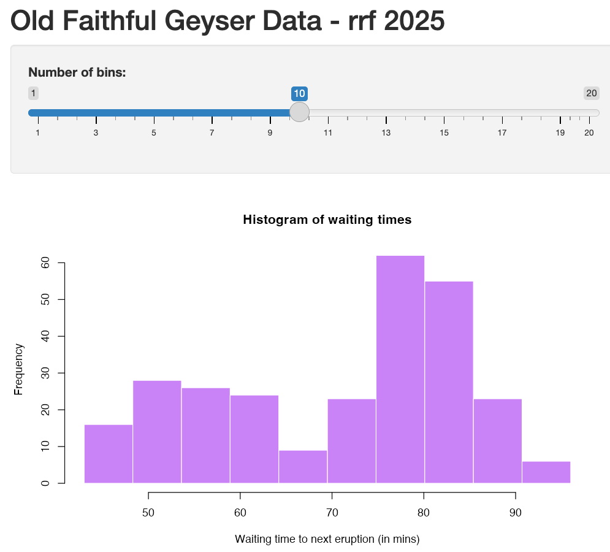
- The app with the modifications is available here
Behind the Scenes: Running a Shiny App ⚙️
Before you close the app, check the R console. You’ll see something like:
#> Listening on http://127.0.0.1:3827🔍 What it means: - 127.0.0.1 refers to your local machine (“localhost”) - 3827 is a random port number - You can open the app in any browser using this address
⛔ While the app is running: - The R console is blocked (no new commands allowed) - A stop sign appears in the RStudio toolbar
🛑 To stop the app: - Click the stop sign icon - Press Esc (or Ctrl + C in terminal) - Close the Shiny app window
Questions

Share your Shiny app
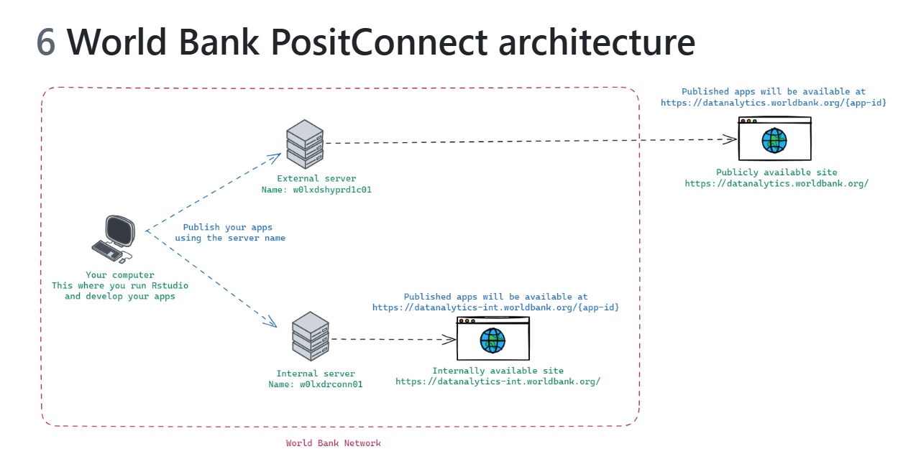

Additional Resources 📚
Want to go further with Shiny? Here are some helpful resources:
🧪 Shiny Tutorial (Official Getting Started Guide) here
📘 Mastering Shiny by Hadley Wickham (Free online book) here
💡 Shiny Widgets Gallery here
🧩 Awesome Shiny Extensions (Community plugins) here
🌐 Shiny Community (Forums, discussions) here
📦 Building Web Applications (Training) here
🧱 Adding multiple objects in layout here